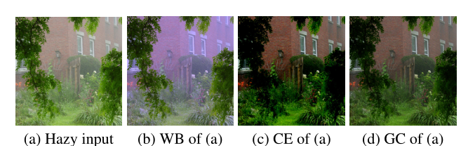
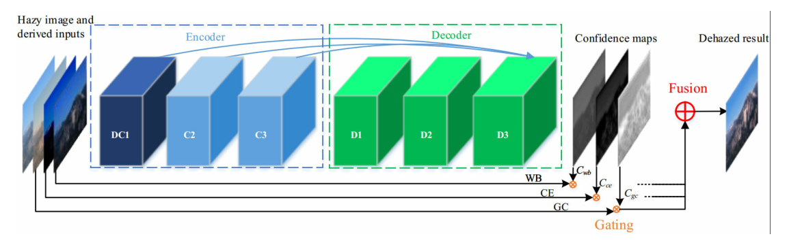
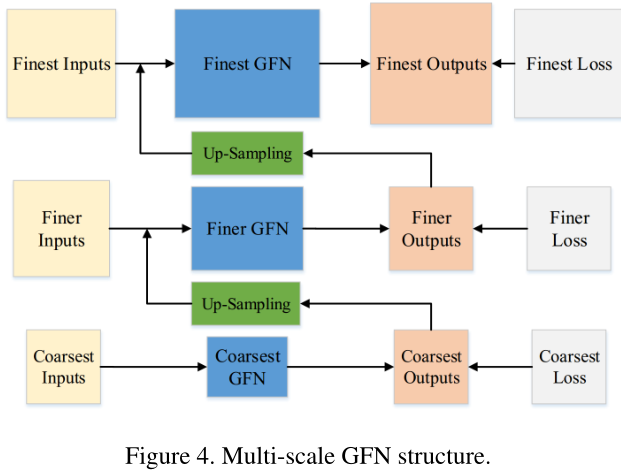
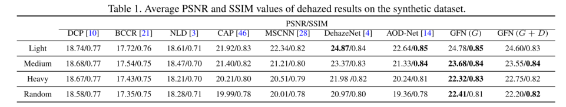
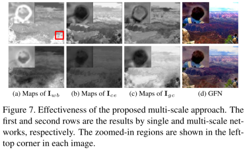
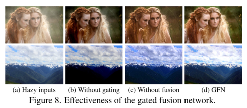

论文阅读-0x04
论文的阅读笔记（Wenqi Ren 任文琦老师）：《Gated Fusion Network for Single Image Dehazing》[code] , CVPR 2018
Gated Fusion Network for Single Image Dehazing
Introduction
- 基于一个端到端可训练的神经网络，该网络由 encoder and a decoder 组成
- 该网络采用融合策略，通过白平衡、对比度增强和伽马校正，从原始的模糊图像中提取3个输入
- White Balance (WB), Contrast Enhancing (CE), and Gamma Correction (GC)
- 基于这些不同输入之间的差异计算像素级置信图，以混合派生输入的信息，并保持良好的区域可见度
- 最终的去噪图像是通过限制输入的重要特征而得到的
- 同时为了训练网络，引入了一种多尺度方法来避免晕轮效应
- 早期的方法专注于根据清晰图像的统计数据来开发手工制作的特征
- 暗通道先验和局部最大对比度（dark channel prior and local max contrast）
- 在去雾化文献中，去雾化过程通常被描述为
-
- I(x) 观测到的雾霾图像; J(x)是无雾场景
- A是全局大气光照
- t(x)是描述未散射并到达摄像机传感器的那部分光的场景传输率
- 不过实际上，光的传播和大气光是未知的。给定一个模糊的图像，大多数去雾方法试图估计透射t(x)和大气光A
-
- 作者认为从模糊图像中估计传输是一个严重病态问题
- 一些方法尝试使用视觉线索来捕获模糊图像的确定性和统计特性
- 显然这些传输近似是不准确的，特别是在场景中，物体的颜色本质上与大气光的颜色相似的情况下
- 所以这种错误的传输估计就会直接影响到恢复质量
- 为此作者提出了一种新的端到端的可训练神经网络，它不显式估计传输和大气光，因此可以避免由传输估计误差引起的伪影
- 模糊图像中有两个主要的因素需要处理：
- 一是由大气光引入的颜色投射
- 二是由于衰减造成的能见度不足

- 第一个输入通过消除大气光引起的色散确保了输出的自然再现(图1(b))
- 第二种对比度增强的输入产生了更好的全局可见性，但主要是在厚的模糊区域(如图1©中的后墙)
- 然而，对比度增强后的图像在光线模糊的区域太暗。因此，为了恢复轻度模糊区域，我们发现gamma校正后的图像很好地恢复了轻度模糊区域的信息(如图1(d)中的前草坪)
- 主要贡献
- 提出了一种深度端到端可训练的中立网络，它可以恢复清晰的图像（无需对场景传输和大气光线进行任何限制）
- 证明了GFN在单一图像去雾的效用和有效性，利用从原始模糊图像的导出输入
- 用多尺度的方法训练所提出的模型，以消除影响图像去雾的光环伪影
- 图像去雾的方法主要有三种:基于多图像的方法、基于手工先验的方法和数据驱动的方法
- 基于多图像的方法：这些方法都做了相同的假设，即在同一场景中使用多幅图像
- 基于手工先验的方法：强烈依赖于假设图像先验的准确性，因此当假设先验不足以描述真实图像时，可能会表现不佳。因此，这些方法往往会引入不需要的人工现象，如颜色失真。
Gated Fusion Network—GFN

- 使用原始的模糊图像和三个衍生图像作为输入
- 其核心思想是学习置信度映射，通过保留图像中最重要的特征，将多个输入图像合并为一个单一的图像
- 首先，由于大气光的影响，模糊图像的颜色经常发生变化；二是遥远地区由于散射和衰减现象造成的能见度不足
- 基于这些观察，我们生成三个输入，从最初的模糊图像中恢复整个图像的颜色和能见度
- 白平衡：对模糊输入进行估计，恢复图像潜色，消除大气色造成的色差
- 灰色世界假设技术：给定一幅颜色变化量足够大的图像，图像中红、绿、蓝分量的平均值应该平均为一个普通灰度值
- 这一假设在任何给定的现实场景中基本上都是有效的，因为颜色的变化是随机的和独立的。可以说，在样本数量较大的情况下，平均值应该趋向于收敛于均值，均值是灰色的
- 虽然白平衡可以消除大气光引起的色移，但结果仍然是低对比度
- 然后利用对比度增强和伽马校正来获取更好的全局信息
- Ancuti and Ancuti 从模糊输入中减去整幅图像的平均亮度值，得到对比度增强图像
- 然后利用一个因子 来对恢复的模糊区域的亮度进行线性增加
- 其中
- 不过在雾霾比较密集的地区。主要原因是随着图像亮度指标的增加，的负值可能会主导对比度增强输入，导致图像的暗区往往是黑色的
- 伽马校正
- 为了克服上述情况，使用伽马校正来创建另一种对比度增强
- 伽玛校正是一种非线性操作，用于对图像内容中的亮度或三色值进行编码(< 1)和解码(> 1)
- 本文中，作者使用了，能有效地解决上述情况
- 白平衡：对模糊输入进行估计，恢复图像潜色，消除大气色造成的色差
- 网络使用了一个encoder-decoder network model ，并且带有残差结构以及跳跃连接
- 在输入层中保留场景颜色的主要信息，同时消除输入中不重要的颜色
- 然后将反卷积层的输出组合起来，以恢复三个导出输入的权重图
- 即反卷积层的输出是衍生输入图像 和 的置信度映射（权重图）
- 将反卷积得到的置信度映射与三个衍生输入相乘，得到每个尺度下的最终去雾图像
- 为了在不丢失局部细节的情况下利用更多的上下文，使用扩展网络来扩大卷积层中的接受域。在每个卷积层或反卷积层之后添加校正层

- 多尺度结构
- 如图所示，首先在粗尺度上进行去雨去雾操作，然后将结果上采样再进一步操作
- 卷积层以连接的形式从前一阶段获取清晰的图像以及它自己的模糊图像和派生的输入
- 每个输入大小是其粗尺度网络大小的两倍
- 在下一阶段之前有一个上采样层。在更精细的尺度上，恢复原始的高分辨率图像
- 通过encoder-decoder结构，构建了一个金字塔结构网络，适用MSE准则
- 对抗损失
- 建立一个鉴别器，以最精细尺度或ground-truth锐化图像的输出作为输入
- 其中F为上图中的多尺度网络，D为鉴别器
Experiments
- 在合成数据集和真实的模糊图像上定量地评估了所提出的算法
- 给定一个清晰的图像 J ,随机大气光A∈(0.8,1.0)和真实深度d,我们使用合成变化映射，然后利用物理模型生成模糊图像。对于散射系数β∈(0.5,1.5)
- 对每一张干净的图像使用7种不同的校正器，这样就可以为每一张输入图像合成不同的雾霾浓度图像
- 此外，在每个模糊输入中加入1%高斯噪声，增强训练后网络的鲁棒性
- 结构相似性(SSIM)和峰值信噪比(PSNR)

- 图像融合是一种保留最有用的特征，将多幅图像融合为一幅图像的方法
- 通过计算相应的置信度图来过滤重要的输入信息，从而有效地融合了输入信息
- 因此，在GFN中，衍生的输入通过三个像素级置信映射进行权重控制，以保持区域的良好可视性
- GFN有两个优点
- 通过单像素的操作可以减少基于块的伪影(例如黑信道优先)
- 消除传输和大气光估计造成的影响

- 多尺度方法的有效性。第一和第二行分别是单尺度网络和多尺度网络的结果

- 训练了一个没有融合过程的端到端网络。该网络与DFN具有相同的结构，只是输入是模糊图像，输出是不需要置信映射学习的去雾结果
- 没有门控的方法会产生图8(b)中的非常暗的图像
- 没有融合策略的方法会产生颜色失真和暗区域的结果，如图8©
- 局限性是DFN不能处理有很大雾的已损坏图像。由于重度雾霾严重地干扰了大气光(大气光不是恒定的)，雾霾模型不适用于此类例子